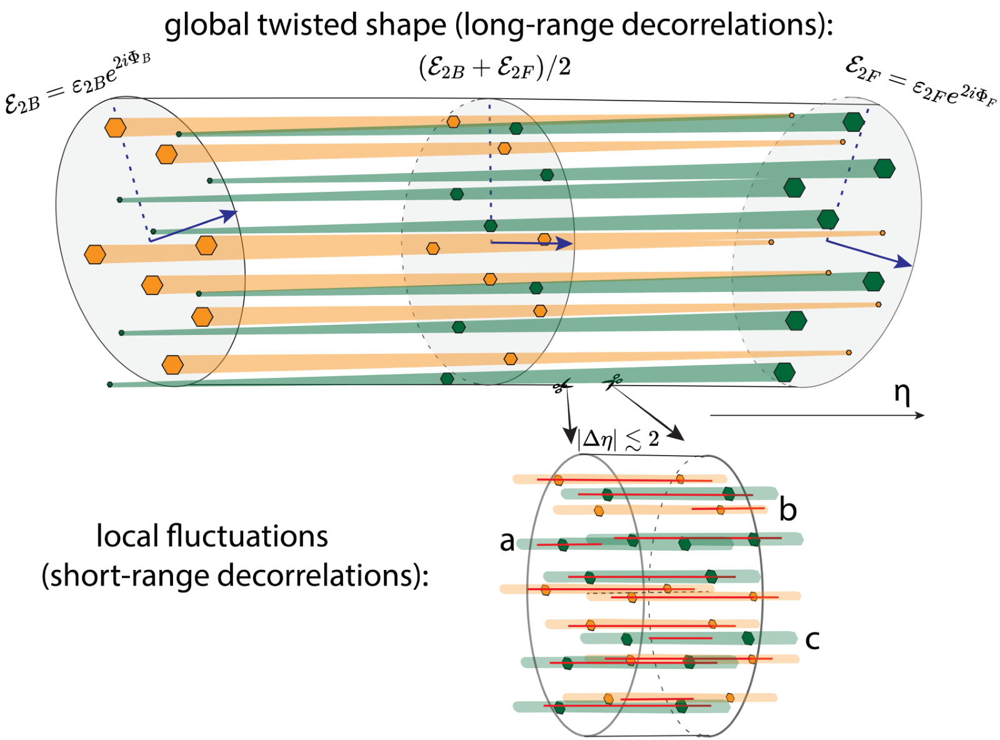
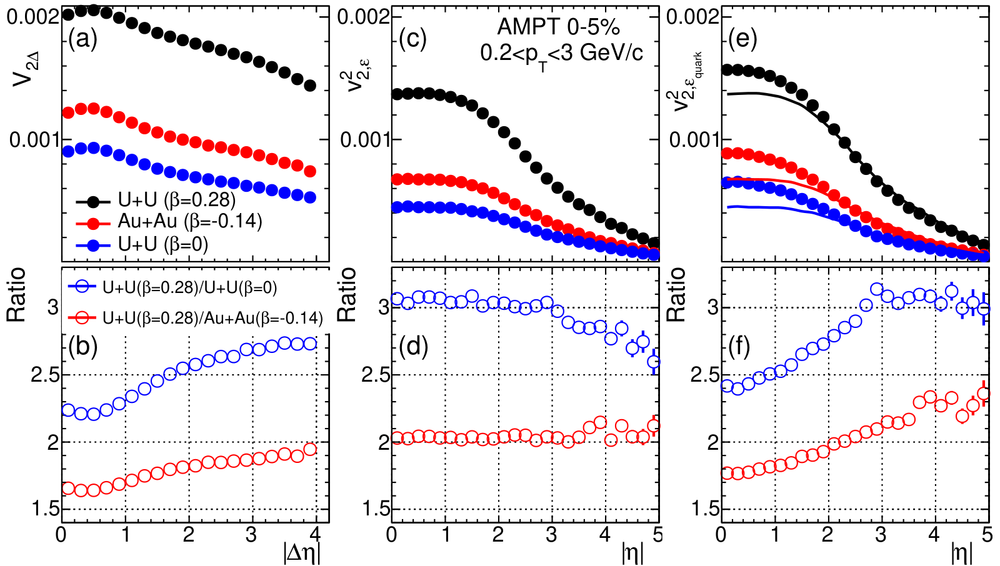
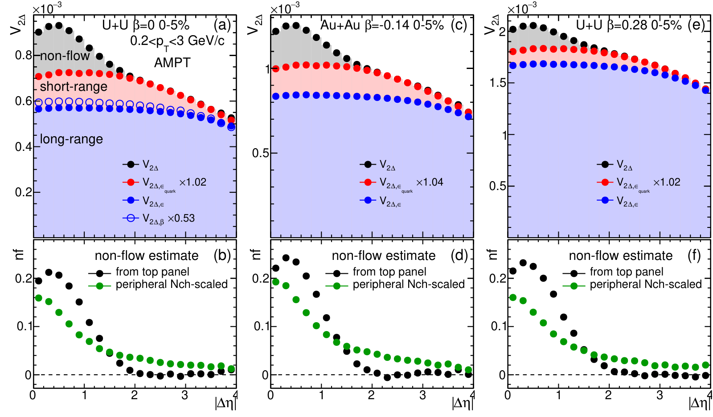
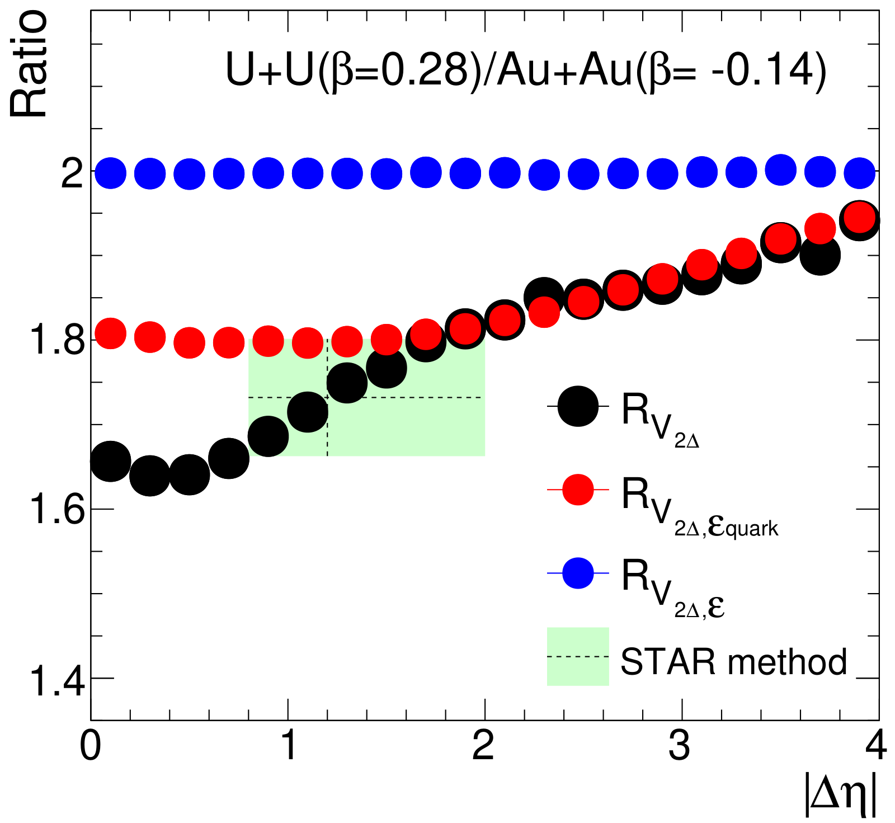

The QGP's longitudinal structure has a global twist and local fluctuations, separable from non-flow
Sources of longitudinal flow decorrelations in high-energy nuclear collisions
J. Jia, S. Huang, C. Zhang, S. Bhatta, arXiv:2408.15006 [nucl-th] (2024), preprint
My role: co-author.
In one paragraph
Along the beam, the hot droplet (QGP) changes shape in two ways: a smooth global twist from one end to the other, and local random fluctuations. Local fluctuations are hard to tell apart from non-flow, short-range correlations among a few particles. Using a transport model, we separate all three, and show that comparing deformed and spherical nuclei exposes the local part.
1The gap: two short-range effects that look alike
Particles flow out of the QGP following its initial elliptic shape (elliptic flow). That shape is not the same everywhere along the beam direction (rapidity η). Nucleons moving forward deposit more energy at forward rapidity, and backward-moving nucleons at backward rapidity. So the shape twists from one end to the other.

Both effects make flow at two rapidities less alike as their separation |Δη| grows (flow decorrelation). The local part acts mostly at small to medium |Δη|. Non-flow also sits at small |Δη|: correlations from decays and jets among a few particles close in rapidity.
2What we compute: flow lined up with different initial shapes
We simulate central (0–5%) U+U and Au+Au collisions with the AMPT transport model. We use deformed uranium (β = 0.28), uranium made spherical (β = 0), and gold (β = −0.14). In AMPT, the local fluctuations come from how each nucleon's energy is spread along rapidity.
Besides the standard two-particle correlation, we line up the final flow with two initial shapes. These projections contain no non-flow:
- Shape of all participating nucleons: captures only the long-range, global part.
- Shape of the early quarks at mid-rapidity (right after the strings melt, before they interact): also captures the local fluctuations.
3What we observe: three components with different ranges
The flow correlation falls with |Δη| in all three systems. The ratio between deformed and spherical uranium rises with |Δη|. For the projection on the nucleon shape, the ratio stays flat; for the projection on the early quark shape, it rises, like the full measurement.

Comparing the three curves splits the standard measurement into parts. The long-range part dominates. The short-range part from local fluctuations comes next and starts to fall only beyond |Δη| ≈ 2. Non-flow is confined to |Δη| < 2. Because the quark shape may miss some local structure, this non-flow estimate is likely an upper limit.

4What we conclude: nuclear shape exposes the short-range structure
Deformation adds flow only in the long-range part. The short-range parts are the same with or without deformation, so at small |Δη| they dilute its effect on the ratio. As |Δη| grows they fade, and the ratio rises.
Between U+U and Au+Au, about half of the rise comes from non-flow at |Δη| < 2. The rest, over 2 < |Δη| < 4, comes from initial-state short-range correlations. These are not exhausted even at |Δη| = 4.

- The paper describes this as the first successful attempt to disentangle long- and short-range flow decorrelations from non-flow.
- For STAR's acceptance, the estimated non-flow is 6.8% in Au+Au and about 4% for the U+U/Au+Au ratio, consistent with the uncertainty quoted by STAR's uranium-shape measurement.
- A broad short-range component also lowers the factorization ratio r₂ used to measure decorrelations, so r₂ does not reflect only the twist between −η and η.
5What comes next
- Other observables: the method can be extended to triangular flow and transverse-momentum fluctuations.
- Other models: it can test the longitudinal initial state and the final-state response in transport or hydrodynamic models.
- Experiment: collisions of isobars or similar nuclei with different shapes, measured with large-acceptance detectors such as the ALICE upgrade and LHCb's SMOG2 fixed-target programme.
All plots on this page are reproduced from that paper under CC BY 4.0. Animations are simplified illustrations made for this page, not results of the paper.